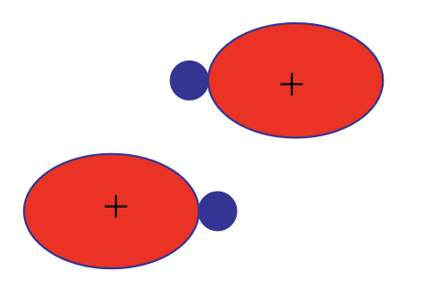
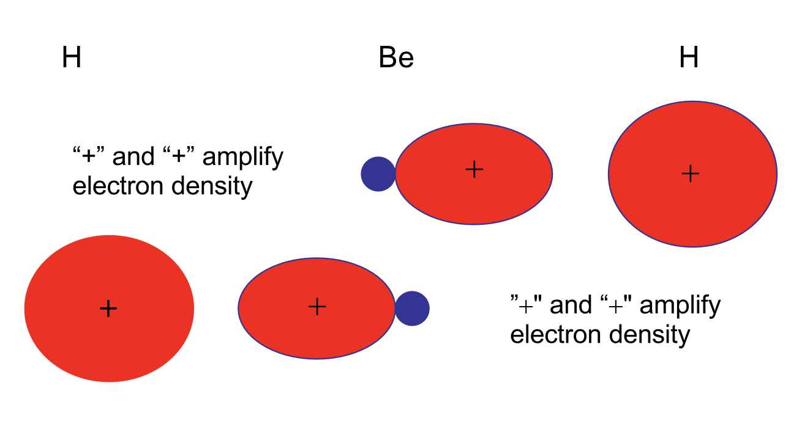
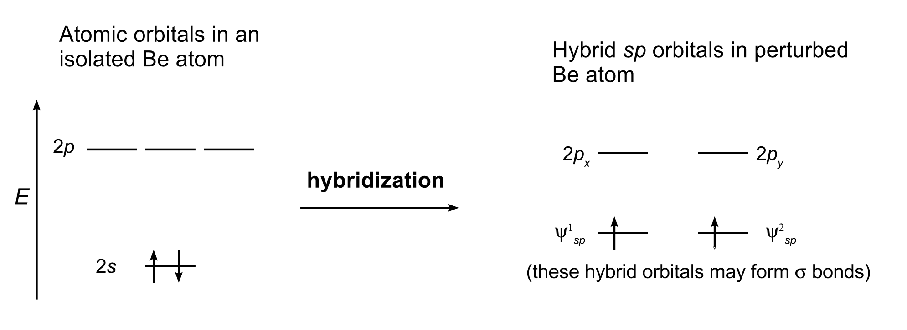
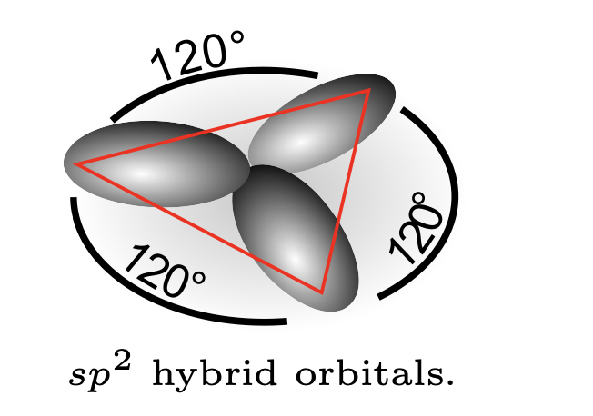
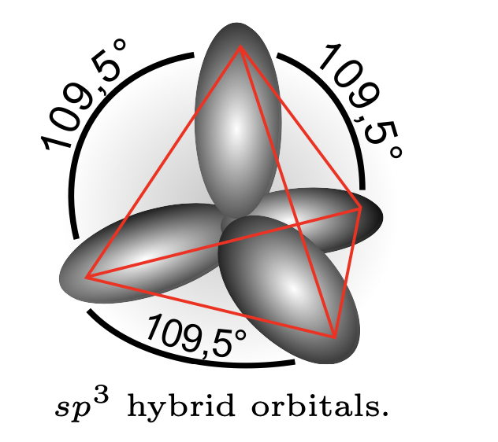
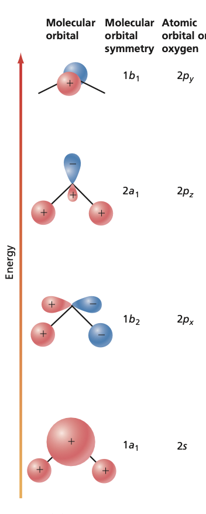
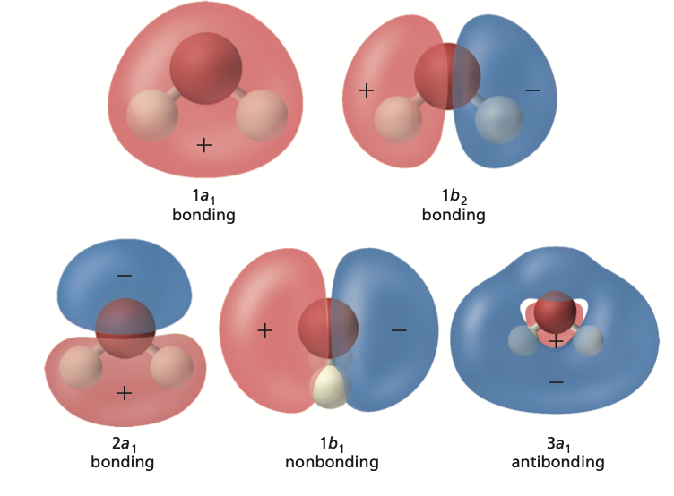
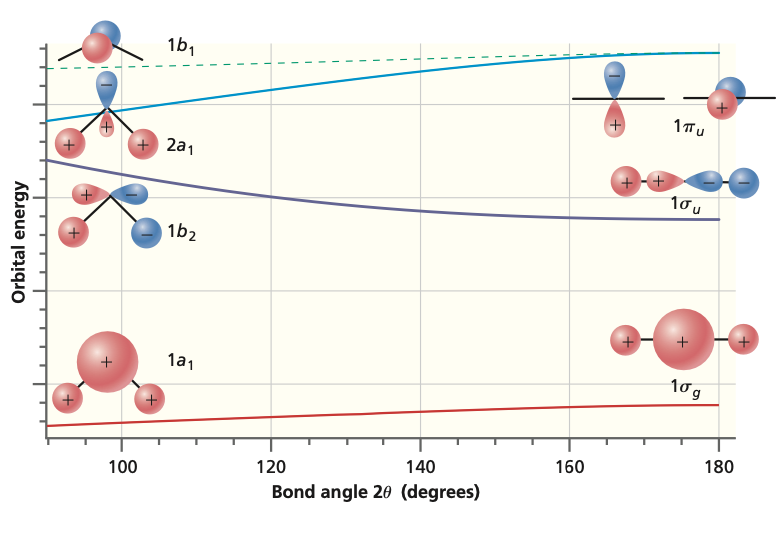
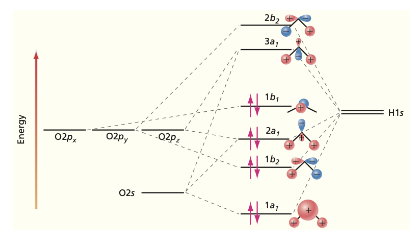

Electronic structure of polyatomic molecules: the valece bond method#
Creating hybrid orbitals centered on atoms#
The valence bond method is an approximate approach, which can be used in understanding formation of chemical bonding. In particular, concepts like hybrid orbitals follow directly from it.
The valence bond method is based on the idea that a chemical bond is formed when there is non-zero overlap between the atomic orbitals of the participating atoms. Note that the the atomic orbitals must therefore have the same symmetry in order to gain overlap.
Hybrid orbitals are essentially linear combinations of atomic orbitals that belong to a single atom. Note that hybrid orbitals are not meaningful for free atoms as they only start to form when other atoms approach. The idea is best illustrated through the following examples.
1. \(BeH_2\) molecule.#
\(Be\) atoms have atomic electron configuration of He\(2s^2\). The two approaching hydrogen perturb the atomic orbitals and the two outer shell electrons reside on the two hybrid orbitals formed (\(z\)-axis is along the molecular axis):

The hybrid orbitals further form two molecular \(\sigma\) orbitals:


This form of hybridization is called \(sp\). This states that one \(s\) and one \(p\) orbital participate in forming the hybrid orbitals. For \(sp\) hybrids, linear geometries are favored and here H–Be–H is indeed linear. Here each MO between Be and H contain two shared electrons. Note that the number of initial atomic orbitals and the number of hybrid orbitals formed must be identical. Here \(s\) and \(p\) atomic orbitals give two \(sp\) hybrid orbitals. Note that hybrid orbitals should be orthonormalized.
2. \(BH_3\) molecule.#
All the atoms lie in a plane (i.e. planar structure) and the angles between the H atoms is 120\degree . The boron atom has electron configuration \(1s^22s^22p\). Now three atomic orbitals (\(2s\), \(2p_z\), \(2p_x\)) participate in forming three hybrid orbitals:
The three orbitals can have the following spatial orientations:

Each of these hybrid orbitals bind form \(\sigma\) bonds with H atoms. This is called \(sp^2\) hybridization because two \(p\) orbitals and one \(s\) orbital participate in the hybrid.
3. \(CH_4\) molecule.#
The electron configuration of carbon atom is \(1s^22s^22p^2\). The outer four valence electrons should be placed on four \(sp^3\) hybrid orbitals:
These four hybrid orbitals form \(\sigma\) bonds with the four hydrogen atoms.

The \(sp^3\) hybridization is directly responsible for the geometry of CH\(_4\) molecule. Note that for other elements with \(d\)-orbitals, one can also get bipyramidal (coordination 5) and octahedral (coordination 6) structures.
4. \(H_2 O\) molecule.#
The oxygen is \(sp^3\) hybridized with O atom electron configuration: \(1s^22s^22p^4\). Now two of the four hybrid orbitals are doubly occupied with the electrons from oxygen atom and the remaining two hybrid orbitals can participate in \(\sigma\) bonding with two H atoms. This predicts the bond angle H–O–H as \(109\degree \)(experimental value \(104\degree\)). Thus \(H_2O\) has two lone-pair electrons.




Other Molecules#
Numerical Calculations#
In numerical quantum chemical calculations, basis sets that resemble linear combinations of atomic orbitals are typically used (LCAO-MO-SCF). The atomic orbitals are approximated by a group of Gaussian functions, which allow analytic integration of the integrals, for example, appearing in the Hartree-Fock (SCF; HF) method. Note that hydrogenlike atom orbitals differ from Gaussian functions by the power of \(r\) in the exponent. A useful rule for Gaussians: A product of two Gaussian functions is another Gaussian function.